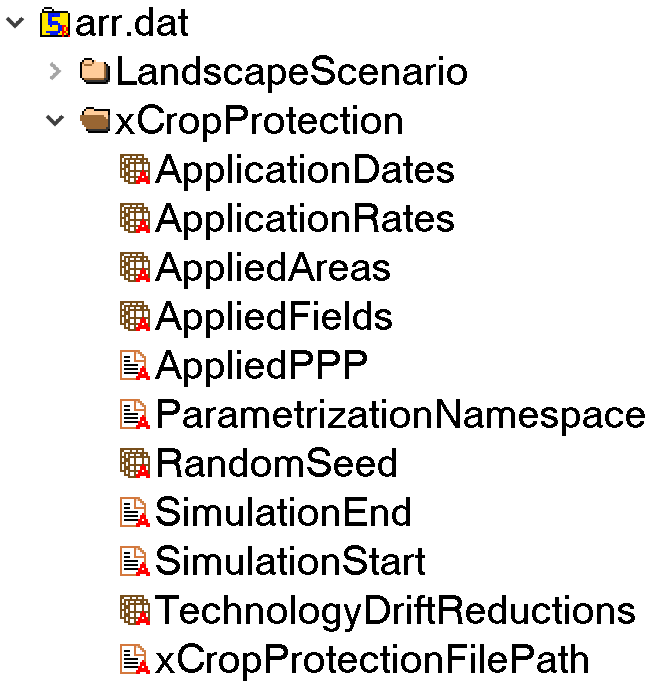
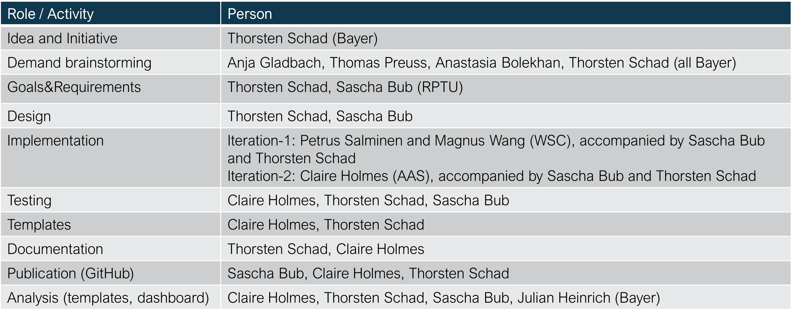

Welcome to xCropProtection
Welcome to the xCropProtection (xCP) documentation. This documentation provides an introduction and will walk new users through how to get started with the xCropProtection Landscape Model component, including explanations for sample input files.
Background
Chemical Crop Protection is under scientific and public debate. There seems broad concensus that chemical crop protection will have to be more targeted and generally reduced in the future. In this context also well established risk assessment principles and schemes are questioned.
In context of these developments, today already specific risk assessment and risk management questions come up which require operational instruments to model real-world chemical plant protection and its environmental impact, eg.,
- Holistic view to risk, multiple stressors analysis, eg, bee risk assessment (honey bee, wild bees, pollinators, systems-based approach, EFSA, Bee Guidance)
- Risk Assessment Recovery Option (EFSA, Aquatic Guidance)
- Environmental Impact Reduction (EIR), eg, what if analysis, assessment and documentation of real-world EIR by new products and digital environmental safety solutions
- Insect decline causal analysis and biodiversity enhancement
- Monitoring (design, insights, transfer of results to other regions and times)
- Solutions for Integrated Pest Management: improved integration of the use of chemicals and agricultural practices to reduce environmental impact, comparison of pest control options (eg, weed control)
- Specific Protection Goals: identification of driving factors of populations dynamics for targeted chemical risk assessment endpoints and schemes
- Ecosystem Services (Millennium Ecosystem Assessment): improvend quantitative insights into real-world Ecosystem Services for more explicit and transparent cost/benefit risk management
In summary, the work on key topics of the future of pesticide risk assessment and risk management, as well as overarching goals of sustainable and regenerative agriculture requires improved operational instruments which allow to better understand real-world implications.
The development of xCP component, in the context of a modular landscape modelling approach (xLandscape), is intended to support these developments.
Intro
xCropProtection is a landscape model component for simulating applications of plant protection products (PPPs) on fields within a given landscape. Multiple PPP uses in multiple crops can be simulated, comprising typical PPP spray sequences, eg. as recommended by plant protection services. This includes chemical and alternative plant protection measures.
The user defines PPP uses in a Crop Protection Calender, including application technology, and mitigation measures for reducing exposure (risk). The approach of using a Crop Protection Calender is based on agricultural practice, where pest control measures for a crop are typically planned based on experiance, PPP availability and other factors. Crop protection plans are made eg, by official plant protection advisory services, farmers, or PPP producers. Besides reflecting ag practice, the approach of a CPC also addresses modelling practice in risk assessment which typically focus on a certain indication, conducted over long time periods. Beyond these established uses, alternative CPCs can be used to assess the environmental impact of alternative pest control options, or to design new pest control means against established ones, considered as baselines.
On each time step (eg, day) and field in a simulation, xCP checks if there are products to apply. If so, exact application details are determined based on model parameterisation (eg, deterministic or by sampling from from distributions given by the user) and executed.
xCP is basically built to be used as a component, integrated into the modular landscape modelling approach xLandscape. However, xCP can be used in any other environment.
Installation
Option 1: xCropProtection Demo Model
As every component, xCP needs to be operated in a landscape modelling environment. An example landscape model using xCP was built in the xLandscape framework, called xCropProtectionDemo.
A user who just want to explore xCP or only needs the functionality of xCP should clone the repository xCropProtectionDemo. Contact Sascha Bub (sascha.bub@rptu.de) or Thorsten Schad (thorsten.schad@bayer.com) for access to the repository. Cloning steps vary based on the application being used, eg. Sourcetree or Visual Studio Code.
After cloning the repository, a user will have everything necessary to start using xCropProtection including sample scenarios and parametrization files.
Option 2: add xCropProtection to any Landscape Model
As any other component, xCP is built to be used (together with other components) in the xLandscape framework in order to build a landscape model.
- The Landscape Model must first be set up; see the Landscape Model Core's README for detailed instructions.
- Create an xCropProtection folder in \core\components if it does not already exist.
- Copy the xCropProtection component from GitHub into the xCropProtection subfolder.
- The file mc.xml contains information about the components that are used in the created xLandscape model. Make use of the xCropProtection component by adding the following lines:
<xCropProtection module="components" class="xCropProtection">
<xCropProtectionFilePath scales="global">
$(_PROJECT_DIR_)\CropProtection\$(CropProtectionScenario).xml
</xCropProtectionFilePath>
<ParametrizationNamespace scales="global">
urn:xCropProtectionLandscapeScenarioParametrization
</ParametrizationNamespace>
<SimulationStart type="date" scales="global">
$(SimulationStart)
</SimulationStart>
<SimulationEnd type="date" scales="global">
$(SimulationEnd)
</SimulationEnd>
<RandomSeed type="int" scales="global">
0
</RandomSeed>
<OutputApplicationType>
$(OutputApplicationType)
</OutputApplicationType>
<ProductDatabase>
$(_PROJECT_DIR_)\$(ProductDatabase)
</ProductDatabase>
<Fields>
<FromOutput component="LandscapeScenario" output="FeatureIds"/>
</Fields>
<LandUseLandCoverTypes>
<FromOutput component="LandscapeScenario" output="FeatureTypeIds"/>
</LandUseLandCoverTypes>
<FieldGeometries>
<FromOutput component="LandscapeScenario" output="Geometries"/>
</FieldGeometries>
</xCropProtection>
Getting started
Below is an example of the folder structure of the xCropProtectionDemo model after being cloned:
├── CropProtection
│ ├── PPMCalendars
│ │ ├── Rummen-full
│ │ │ ├── PPMCalendar-1a-L1.xml
│ │ │ ├── PPMCalendar-1a-L2.xml
│ │ │ ├── PPMCalendar-1b-L1.xml
│ │ │ └── PPMCalendar-1b-L2.xml
│ │ ├── Rummen-xCP-TestingScenario
│ │ │ ├── PPMCalendar-222.xml
│ │ │ └── PPMCalendar-444.xml
│ │ └── ...
│ ├── Technologies.xml
│ ├── xCropProtection-rummen-full.xml
│ ├── xCropProtection-rummen-xCP-testing.xml
│ └── ...
├── analysis
│ ├── ProductNames.csv
│ ├── ProductTypes.csv
│ ├── requirements.txt
│ ├── xCP_map_vis.ipynb
│ ├── xCP_plots.ipynb
│ ├── xCP_total_loading.ipynb
│ └── xCP_write_csv.ipynb
├── model
│ ├── core
│ ├── variant
│ │ ├── experiment.xml
│ │ ├── mc.xml
│ │ └── package.xsd
├── scenario
│ ├── Rummen-full
│ │ ├── Documentation
│ │ │ ├── scenario-geo-image.jpg
│ │ │ └── scenario-project.qgz
│ │ ├── geo
│ │ │ ├── (multiple shp files)
│ │ │ └── package.xinfo
│ │ ├── weather
│ │ │ └── weather_mars-97100.csv
│ │ └── scenario.xproject
│ ├── Rummen-xCP-TestingScenario
│ │ ├── Documentation
│ │ │ ├── scenario-geo-image.jpg
│ │ │ └── scenario-project.qgz
│ │ ├── geo
│ │ │ ├── (multiple shp files)
│ │ │ └── package.xinfo
│ │ └── scenario.xproject
│ └── ...
├── .gitignore
├── .gitmodules
├── README.md
├── __start__.bat
└── template.xrun
To start xCropProtection using the sample scenario, drag template.xrun onto __start__.bat. This will start an xCropProtection run using Rummen-xCP-TestingScenario as input. Output of the model run can be found in the newly created \run\Rummen-xCP-TestingScenario\mcs\[mc run ID]\store\arr.dat.
Note
SimIDs need to be unique. xCropProtection will create a folder for each run using the SimID defined in template.xrun. The SimID cannot be the same as a folder already contained in the run folder. In case you want to run a simulation with the same SimID you need to delete this folder first.
Viewing and analyzing the output
HDFView
xLandscape makes use of multidimensional data stores. At present, HDF is being used.
To view the raw output of xCropProtection, open \run\Rummen-xCP-TestingScenario\mcs\[mc run ID]\store\arr.dat with a HDF5 file viewer such as HDFView. Expand the xCropProtection folder.

Right click on an item and click "Open" to view its attributes and data.
Jupyter Notebooks
The analysis folder contains Jupyter notebooks which can analyze and visualize the output of xCropProtection. requirements.txt lists python packages necessary to run the Jupyter notebooks in this folder.
xCP_write_csv.ipynb
xCP_write_csv.ipynb (version 1.0) writes the contents of arr.dat to a csv file. User parameters:
xcrop_arrdat_path : C:\path\to\arr.dat
app_rates_path : C:\path\to\output_file.csv
In the last cell, comment or uncomment any of the following lines to change the columns written to the csv.
dfs.append(pandas.DataFrame(application_dates, columns=["ApplicationDates"]))
dfs.append(pandas.DataFrame(application_dates_day_month, columns=["ApplicationDayMonth"]))
dfs.append(pandas.DataFrame(applied_features_data, columns=["FeatureID"]))
dfs.append(pandas.DataFrame(application_rates_data, columns=["ApplicationRates(g/ha)"]))
dfs.append(pandas.DataFrame(decode_PPP, columns=["AppliedPPP"]))
dfs.append(pandas.DataFrame(geom_project_area_ha, columns=["AppliedArea(ha)"]))
dfs.append(pandas.DataFrame(application_rates_data * geom_project_area_ha, columns=["AppliedMass(g)"]))
dfs.append(pandas.DataFrame(drift_reduction_data, columns=["TechnologyDriftReductions"]))
xCP_plots.ipynb
xCP_plots.ipynb (version 1.0) plots application rates (as a scatter plot) of all product applications in a user-defined year. User parameters:
xcrop_arrdat_path : C:\path\to\arr.dat
year_to_chart : only display data for this year
xCP_total_loading.ipynb
xCP_total_loading.ipynb (version 1.0) charts the total loading over time for a specific field. Total loading is calculated by plotting a cumulative sum of mass applied to a field. User parameters:
xcrop_arrdat_path : C:\path\to\arr.dat
total_loading_path : C:\path\to\output_file.csv
input_LULC_path : C:...\xCropProtection\scenario\scenario_name\geo\input_spatial_data.shp
feature_to_chart : ID of the field to chart. If a field ID is invalid, the notebook will plot the total loading of the first field it reads.
xCP_map_vis.ipynb
xCP_map_vis.ipynb (version 1.0) visualizes applications on a map with the ability to advance through time. Currently, this is only built and tested for runs using the Rummen-xCP-TestingScenario. Users should be aware that the map visualization will need code modification and additional input to work with other scenarios. User parameters:
data_store_path : C:\path\to\arr.dat
output_map_html_path : C:path\to\output\html_map.html
output_map_html_2_path : C:\path\to\output\html_map_2.html
product_table : C:...\xCropProtection\analysis\ProductTypes.csv. This table defines product names and their type.
product_colors : C:..\xCropProtection\analysis\ProductNames.csv. This file defines product names and the color they will be symbolized with.
Acknowledgements
The need and the development of the xCP component was initiated by Thorsten Schad (thorsten.schad@bayer.com). It's realisation was only possibly due to the contribution of colleagues listed below and the sponsoring by Bayer AG.
